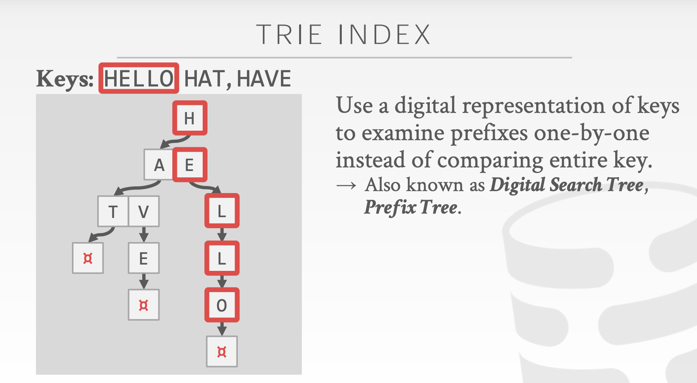

# 什么是字典树 / 前缀树 /trie
前缀树，又称字典树。是 N叉树 的一种特殊形式。前缀树用于存储、查找字符串。前缀树的每一个节点代表一个字符串（前缀）。每一个节点会有多个子节点，通往不同子节点的路径上有着不同的字符。子节点代表的字符串是由节点本身的原始字符串 ，以及通往该子节点路径上所有的字符组成的。

在上图示例中，我们在节点中标记的值是该节点对应表示的字符串。例如，我们从根节点开始，选择第二条路径 ‘b’，然后选择它的第一个子节点 ‘a’，接下来继续选择子节点 ‘d’，我们最终会到达叶节点 “bad”。节点的值是由从根节点开始，与其经过的路径中的字符按顺序形成的。
值得注意的是，根节点表示空字符串。
前缀树的一个重要的特性是，节点所有的后代都与该节点相关的字符串有着共同的前缀。这就是 前缀树 名称的由来。
我们再来看这个例子。例如，以节点 “b” 为根的子树中的节点表示的字符串，都具有共同的前缀 “b”。反之亦然，具有公共前缀 “b” 的字符串，全部位于以 “b” 为根的子树中，并且具有不同前缀的字符串来自不同的分支。
前缀树有着广泛的应用，例如自动补全，拼写检查等等。
# 如何表示一个前缀树
-
用数组存储子节点
例如，如果我们只存储含有字母
a到z的字符串，我们可以在每个节点中声明一个大小为 26 的数组来存储其子节点。对于特定字符c，我们可以使用c - 'a'作为索引来查找数组中相应的子节点。c #define N 26struct TrieNode {
TrieNode* children[N];
// you might need some extra values according to different cases};
/** Usage:* Initialization: TrieNode root = new TrieNode();
* Return a specific child node with char c: (root->children)[c - 'a']
*/
访问子节点十分快捷。访问一个特定的子节点比较容易，因为在大多数情况下，我们很容易将一个字符转换为索引。但并非所有的子节点都需要这样的操作，所以这可能会导致空间的浪费。
-
用 Hashmap 来存储子节点
我们可以在每个节点中声明一个 Hashmap 。Hashmap 的键是字符，值是相对应的子节点。
c struct TrieNode {
unordered_map<char, TrieNode*> children;
// you might need some extra values according to different cases};
/** Usage:* Initialization: TrieNode root = new TrieNode();
* Return a specific child node with char c: (root->children)[c]
*/
通过相应的字符来访问特定的子节点更为容易。但它可能比使用数组稍慢一些。但是，由于我们只存储我们需要的子节点，因此节省了空间。这个方法也更加灵活，因为我们不受到固定长度和固定范围的限制。
我们已经提到过如何表示前缀树中的子节点。除此之外，我们也需要用到一些其他的值。
例如，我们知道，前缀树的每个节点表示一个字符串，但并不是所有由前缀树表示的字符串都是有意义的。如果我们只想在前缀树中存储单词，那么我们可能需要在每个节点中声明一个布尔值（Boolean）作为标志，来表明该节点所表示的字符串是否为一个单词。
# 前缀树中的插入操作
review：如何在二叉搜索树中插入一个新的节点？
当我们在二叉搜索树中插入目标值时，在每个节点中，我们都需要根据 节点值 和 目标值 之间的关系，来确定目标值需要去往哪个子节点。同样地，当我们向前缀树中插入一个目标值时，我们也需要根据插入的 目标值 来决定我们的路径。
更具体地说，如果我们在前缀树中插入一个字符串 S ，我们要从根节点开始。 我们将根据 S[0] （S 中的第一个字符），选择一个子节点或添加一个新的子节点。然后到达第二个节点，并根据 S[1] 做出选择。 再到第三个节点，以此类推。 最后，我们依次遍历 S 中的所有字符并到达末尾。 末端节点将是表示字符串 S 的节点。
通常情况情况下，你需要自己构建前缀树。构建前缀树实际上就是多次调用插入函数。但请记住在插入字符串之前要初始化根节点
# 实现 trie (经典的字典树)
208. 实现 Trie (前缀树) - 力扣（LeetCode）
请你实现 Trie 类：
Trie()初始化前缀树对象。void insert(String word)向前缀树中插入字符串word。boolean search(String word)如果字符串word在前缀树中，返回true（即，在检索之前已经插入）；否则，返回false。boolean startsWith(String prefix)如果之前已经插入的字符串word的前缀之一为prefix，返回true；否则，返回false。
示例：
// 输入 | |
["Trie", "insert", "search", "search", "startsWith", "insert", "search"] | |
[[], ["apple"], ["apple"], ["app"], ["app"], ["app"], ["app"]] | |
// 输出 | |
[null, null, true, false, true, null, true] | |
// 解释 | |
Trie trie = new Trie(); | |
trie.insert("apple"); | |
trie.search("apple"); // 返回 True | |
trie.search("app"); // 返回 False | |
trie.startsWith("app"); // 返回 True | |
trie.insert("app"); | |
trie.search("app"); // 返回 True |
提示：
1 <= word.length, prefix.length <= 2000word和prefix仅由小写英文字母组成insert、search和startsWith调用次数总计不超过 3 * 10^^4 次
力扣解析：
字典树，一棵有根树，其每个节点包含以下字段：
- 指向子节点的指针数组
children。对于本题而言，数组长度为 26，即小写英文字母的数量。此时children[0]对应小写字母 a，children[1]对应小写字母 b，…，children[25]对应小写字母 z。- 布尔字段
isEnd，表示该节点是否为字符串的结尾。插入字符串
我们从字典树的根开始，插入字符串。对于当前字符对应的子节点，有两种情况：
- 子节点存在。沿着指针移动到子节点，继续处理下一个字符。
- 子节点不存在。创建一个新的子节点，记录在 children 数组的对应位置上，然后沿着指针移动到子节点，继续搜索下一个字符。
重复以上步骤，直到处理字符串的最后一个字符，然后将当前节点标记为字符串的结尾。
查找前缀
我们从字典树的根开始，查找前缀。对于当前字符对应的子节点，有两种情况：
- 子节点存在。沿着指针移动到子节点，继续搜索下一个字符。
- 子节点不存在。说明字典树中不包含该前缀，返回空指针。
重复以上步骤，直到返回空指针或搜索完前缀的最后一个字符。
若搜索到了前缀的末尾，就说明字典树中存在该前缀。此外，若前缀末尾对应节点的
isEnd为真，则说明字典树中存在该字符串。
class Trie { | |
private: | |
vector<Trie*> children; | |
bool isEnd; | |
Trie* searchPrefix(string prefix) { | |
Trie* node = this; | |
for (char ch : prefix) { | |
ch -= 'a'; | |
if (node->children[ch] == nullptr) { | |
return nullptr; | |
} | |
node = node->children[ch]; | |
} | |
return node; | |
} | |
public: | |
Trie() : children(26), isEnd(false) {} | |
void insert(string word) { | |
Trie* node = this; | |
for (char ch : word) { | |
ch -= 'a'; | |
if (node->children[ch] == nullptr) { | |
node->children[ch] = new Trie(); | |
} | |
node = node->children[ch]; | |
} | |
node->isEnd = true; | |
} | |
bool search(string word) { | |
Trie* node = this->searchPrefix(word); | |
return node != nullptr && node->isEnd; | |
} | |
bool startsWith(string prefix) { | |
return this->searchPrefix(prefix) != nullptr; | |
} | |
}; |
首先构建节点（Node）；弄清了节点的结构和含义，一棵树（Tree）的构建就会水到渠成
class TrieNode { | |
boolean isWord; // 从 root 根节点至此是否是一个完整的单词（即这个节点是否是一个单词的结尾） | |
TrieNode[] children = new TrieNode[26]; // 巧妙的用数组的下标作为 26 个字母；数组的值则为子节点 | |
public TrieNode(){} // 无参构造函数 (不写也行) | |
} |
如果没有 a-z 的限制，就不能用数组，而使用哈希表。
构建好了节点，下面开始构建树，并写出树的一些方法：
class TrieNode { // 节点 | |
bool isWord; | |
TrieNode[] children = new TrieNode[26]; | |
} | |
class Trie { | |
TrieNode root; // 根节点 | |
public: | |
Trie() { | |
root = new TrieNode(); // 构造字典树，就是先构造出一个空的根节点 | |
} | |
//【向字典树插入单词 word】 | |
// 思路：按照 word 的字符，从根节点开始，一直向下走： | |
// 如果遇到 null，就 new 出新节点；如果节点已经存在，cur 顺着往下走就可以 | |
void insert(string word) { | |
TrieNode cur = root; // 先指向根节点 | |
for (int i = 0; i< word.length(); i// 如果是【后缀树】而不是【前缀树】，把单词倒着插就可以了，即 for (len-1; 0; i--) | |
int c = word.charAt(i) - 'a'; // (关键) 将一个字符用数字表示出来，并作为下标 | |
if (cur.children[c] == null) { | |
cur.children[c] = new TrieNode(); | |
} | |
cur = cur.children[c]; | |
} | |
cur.isWord = true; | |
} | |
//【判断一个单词 word 是否完整存在于字典树中】 | |
// 思路：cur 从根节点开始，按照 word 的字符一直尝试向下走： | |
// 如果走到了 null，说明这个 word 不是前缀树的任何一条路径，返回 false; | |
// 如果按照 word 顺利的走完，就要判断此时 cur 是否为单词尾端：如果是，返回 true；如果不是，说明 word 仅仅是一个前缀，并不完整，返回 false | |
bool search(string word) { | |
TrieNode cur = root; | |
for (int i = 0; i < word.length(); i++){ | |
int c = word.charAt(i) - 'a'; | |
if (cur.children[c] == null) { | |
return false; | |
} | |
cur = cur.children[c]; | |
} | |
return cur.isWord; | |
} | |
//【判断一个单词 word 是否是字典树中的前缀】 | |
// 思路：和 sesrch 方法一样，根据 word 从根节点开始一直尝试向下走： | |
// 如果遇到 null 了，说明这个 word 不是前缀树的任何一条路径，返回 false; | |
// 如果安全走完了，直接返回 true 就行了 ——— 我们并不关心此事 cur 是不是末尾 (isWord) | |
bool startsWith(string prefix) { | |
TrieNode cur = root; | |
for (int i = 0; i < word.length(); i++){ | |
int c = word.charAt(i) - 'a'; | |
if (cur.children[c] == null){ | |
return false; | |
} | |
cur = cur.children[c]; | |
} | |
return true; | |
} | |
}; | |
/** | |
* Your Trie object will be instantiated and called as such: | |
* Trie* obj = new Trie(); | |
* obj->insert(word); | |
* bool param_2 = obj->search(word); | |
* bool param_3 = obj->startsWith(prefix); | |
*/ |
# 单词的压缩编码
820. 单词的压缩编码 - 力扣（LeetCode）
单词数组 words 的 有效编码 由任意助记字符串 s 和下标数组 indices 组成，且满足：
- words.length == indices.length
- 助记字符串 s 以 ‘#’ 字符结尾
- 对于每个下标 indices [i] ，s 的一个从 indices [i] 开始、到下一个 ‘#’ 字符结束（但不包括 ‘#’）的 子字符串 恰好与 words [i] 相等
给你一个单词数组 words ，返回成功对 words 进行编码的最小助记字符串 s 的长度 。
示例 1：
输入：words = [“time”, “me”, “bell”]
输出：10
解释：一组有效编码为 s = “time#bell#” 和 indices = [0, 2, 5] 。
words [0] = “time” ，s 开始于 indices [0] = 0 到下一个 ‘#’ 结束的子字符串，如加粗部分所示 “time#bell#”
words [1] = “me” ，s 开始于 indices [1] = 2 到下一个 ‘#’ 结束的子字符串，如加粗部分所示 “time#bell#”
words [2] = “bell” ，s 开始于 indices [2] = 5 到下一个 ‘#’ 结束的子字符串，如加粗部分所示 “time#bell#”
示例 2：
输入：words = [“t”]
输出：2
解释：一组有效编码为 s = “t#” 和 indices = [0] 。
提示：
1 <= words.length <= 20001 <= words[i].length <= 7words[i]仅由小写字母组成
class Solution { | |
public: | |
int minimumLengthEncoding(vector<string>& words) { | |
} | |
}; |